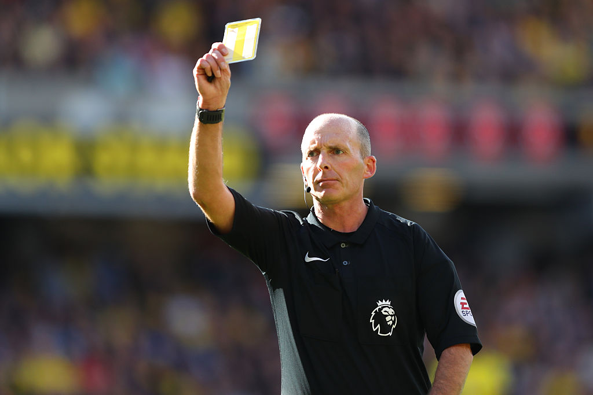

Mike Dean cautioning a player for a foul.
Who are they?
A match is controlled by a referee who has the authorirty to enforce the Laws of the Game. Decisions will be made to the best of the referee's ability according to the Laws of the Game and the 'spirit of the game' and will be based on the opinion of the referee who has the discretion to take appropriate action within the framework of the Laws of the Game.